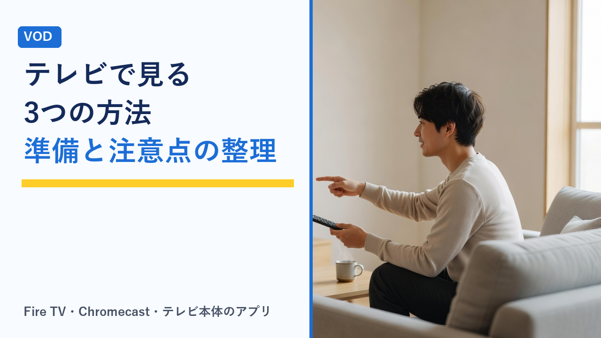

ABEMAをテレビで見る方法：Fire TV・Chromecast・テレビ本体のアプリ別の準備と注意点
更新日：2026-11-16

ABEMAはスマホやパソコンだけでなく、テレビの大画面でも見られます。App StoreのABEMAアプリのページにも「テレビやその他様々なデバイスでもABEMAをお楽しみいただけます」と案内されています（2026年11月16日確認）。ただし、テレビで見る方法は1つではなく、家にあるテレビや機器によって準備するものが変わります。この記事では、テレビ本体のアプリ・Fire TV・Chromecast（Google TV）・Apple TVといった方式ごとに、準備と注意点を客観的に整理します。
ABEMAをテレビで見る主な方法
どの方法も「テレビをインターネットにつなぎ、ABEMAのアプリで再生する」という点は同じです。違いは、アプリを動かす機器がテレビ本体なのか、あとから差す機器なのかです。
| 方法 | 用意するもの | 向いている状況 | 先に確認すること |
|---|---|---|---|
| テレビ本体のアプリ（スマートテレビ） | ネットにつながる対応テレビ | 比較的新しいテレビを持っている | テレビのアプリ一覧やリモコンにABEMAがあるか |
| Fire TVシリーズ | Fire TV本体、HDMI端子のあるテレビ、Amazonアカウント、Wi-Fi | テレビが古い、またはアプリが非対応 | 手持ちのFire TVの世代が対応範囲に入っているか |
| Chromecast・Google TV搭載機器 | 機器本体、HDMI端子のあるテレビ、Googleアカウント、Wi-Fi | Android・Googleのサービスをよく使う | 機器の世代と、アプリ方式かキャスト方式か |
| Apple TV | Apple TV本体、HDMI端子のあるテレビ、Appleのアカウント | iPhoneなどApple製品が中心 | tvOSのバージョン |
| パソコンをHDMIでつなぐ | パソコン、HDMIケーブル | 一時的に大画面へ映したい | ケーブルや変換アダプタが著作権保護に対応しているか |
各方式に共通する仕組みや、VOD全般での選び方はテレビでVODを見る方法まとめで整理しています。ここからはABEMAに絞って見ていきます。
対応機器は「いまの公式一覧」で確認する
ABEMAの対応機器は、公式ヘルプの「対応デバイス」のページにまとめられています（App Storeのアプリ説明文からも案内されています）。機器の世代やOSのバージョンによって対象が決まるため、購入や契約の前に最新の一覧を見るのが確実です。参考として、公開されている情報から読み取れる範囲を整理します。
| 情報の出どころ | 時点 | 書かれている内容 |
|---|---|---|
| App StoreのABEMAアプリのページ | 2026年11月16日確認 | 互換性の欄にApple TVがあり、「tvOS 16.0以降が必要」と表示 |
| ABEMA運営会社（サイバーエージェント）の発表 | 2023年6月15日 | 対応環境として、国内外メーカーのテレビ、Apple TV（第4世代以降）、Google Chromecast（第2世代以降）、Amazon Fire TVシリーズ（2019年以降）、Nintendo Switchなどを掲載 |
| 同じ発表 | 2023年6月15日 | 「国内主要テレビメーカーのリモコン全てに『ABEMA』ボタンが搭載」と説明 |
注意したいのは、2023年の発表はその時点の情報だという点です。たとえばApple TVは、当時の発表では「tvOS 14.0以降」とされていましたが、現在のApp Storeでは「tvOS 16.0以降」と表示されています。このように必要な条件は引き上げられることがあるため、古い機器を使う場合ほど、現在の公式一覧での確認が欠かせません。
方式別の準備と注意点
テレビ本体のアプリ（スマートテレビ）で見る
テレビがインターネットに対応していて、ABEMAのアプリが使える機種であれば、追加の機器は要りません。リモコンにABEMAのボタンがある機種なら、ボタンを押すだけでアプリが開きます。
- テレビをネットにつなぐ：Wi-Fiまたは有線LANで接続します。テレビの設定メニューの「ネットワーク」から行うのが一般的です。
- ABEMAのアプリを探す：リモコンのABEMAボタン、またはテレビのアプリ一覧から開きます。一覧にない場合は、テレビのアプリストアで検索します。
- 見つからないときは対応外の可能性：メーカーや年式によってはアプリが提供されていないことがあります。その場合は、Fire TVなどの機器を追加する方法に切り替えます。
- テレビ本体のソフトウェアを更新する：古いままだとアプリが正しく動かないことがあります。
Fire TVシリーズで見る
Fire TV StickなどをテレビのHDMI端子に差し、ABEMAのアプリを追加して見る方法です。テレビ本体がアプリに対応していなくても使えます。
- HDMI端子に差し、電源をつなぐ：電源は付属のアダプタでコンセントから取るのが基本です。
- テレビの入力を切り替える：リモコンの「入力切替」で、差したHDMI端子の番号を選びます。
- Wi-FiとAmazonアカウントを設定する：画面の案内に沿って進めます。
- ABEMAのアプリを追加する：アプリストアで「ABEMA」を検索して入れます。
- 世代を確認する：2023年の発表では「2019年以降」のFire TVシリーズが対応環境として挙げられていました。以前から持っている古い機器を使う場合は、現在の対応状況を公式一覧で確認します。
Chromecast・Google TV搭載機器で見る
Googleの機器には、大きく2つの使い方があります。
- 機器にアプリを入れて見る方式：Google TV（Android TV）を搭載した機器やテレビでは、テレビ画面上でアプリを追加し、リモコンで操作します。
- スマホからキャストする方式：Googleのヘルプでは、Chromecastをテレビに接続し、Google Homeアプリでセットアップしたうえで、「Chromecast対応アプリからテレビに動画をキャストする」流れが案内されています。操作はスマホ側で行います。
キャストは、スマホの画面をそのまま映す「ミラーリング」とは別の仕組みです。ミラーリングは多くの動画配信アプリで著作権保護のために制限されており、映像が黒くなることがあります。スマホとChromecastは同じWi-Fiにつなぐ必要がある点も押さえておきます。ABEMAアプリでのキャストの可否や対象の世代は、公式の対応デバイス一覧で確認してください。
Apple TVで見る
App Storeの表示（2026年11月16日確認）では、ABEMAアプリの互換性にApple TVが含まれ、tvOS 16.0以降が必要とされています。Apple TVのApp StoreからABEMAを入れて、リモコンで操作します。古いApple TVでは、tvOSを必要なバージョンまで更新できない場合があるため、設定画面で現在のバージョンを見ておきます。
ゲーム機・パソコンをつなぐ方法
2023年の発表では、対応環境にNintendo Switchも挙げられていました。現在も提供されているかは、公式の一覧とゲーム機側のストアで確認します。パソコンをHDMIケーブルでつなぐ方法は、アプリの対応状況に左右されにくい一方、ケーブルや変換アダプタが著作権保護（HDCP）に対応していないと映らないことがあります。
ABEMAプレミアムをテレビで使うときの注意点
有料のABEMAプレミアムに登録している場合、テレビで見るときに確認したい点がいくつかあります。料金と機能は公式ページの表示（2026年11月13日確認）によるものです。
| 確認したい点 | 内容 |
|---|---|
| 同じアカウントで使う | スマホで登録したプレミアムをテレビでも使うには、テレビ側のアプリで同じアカウントを使う設定が必要です。設定しないと、テレビでは無料の範囲の表示になります。手順は公式ヘルプで確認します。 |
| 同時視聴台数 | ABEMAプレミアム（月額1,180円）は2台、広告つきABEMAプレミアム（月額680円）は1台です。広告つきプランでは、テレビで再生中にスマホでも見る、という使い方はできません。 |
| 限定機能の使える範囲 | 追っかけ再生やダウンロードはプレミアムの限定機能で、広告つきプランでは利用できません。また、機能によって使える機器が異なる場合があるため、テレビで使いたい機能があるときは公式ヘルプで対象機器を確認します。 |
| テレビから登録したときの解約場所 | テレビ用の機器のアプリ内で登録すると、その機器のアプリストア（アカウント）側で契約を管理する形になります。解約の場所もそちらになります。 |
解約の場所が登録の経路で決まる点は、ABEMAプレミアムの解約手順で詳しく整理しています。あとで迷わないためには、どの機器・どの支払い方法で登録したかをメモしておくと安心です。2つのプランの違いはABEMAプレミアムと広告つきプランの違いを、家族で使うときの台数の考え方は動画配信サービスの家族アカウント・同時視聴ルールまとめを参考にしてください。
映らない・うまく見られないときの確認表
| 症状 | まず確認すること |
|---|---|
| ABEMAのアプリが見つからない | テレビや機器が対応範囲に入っているか。メーカー・年式・OSのバージョンを公式の対応デバイス一覧と照らし合わせます。 |
| アプリが開かない・すぐ落ちる | アプリと、テレビや機器本体のソフトウェアが最新か。電源を一度抜いて入れ直します。 |
| プレミアムの作品が見られない | テレビ側のアプリが、プレミアムに登録したアカウントと同じになっているか。同時視聴台数を超えていないか。 |
| 途中で止まる・画質が粗い | Wi-Fiが不安定な可能性があります。ルーターとの距離や、ほかの機器の同時利用を見直します。 |
| キャストのボタンが出ない | スマホとChromecastが同じWi-Fiにつながっているか。機器の世代が対応範囲か。 |
| 画面は出るが作品部分が黒い | ミラーリングや、著作権保護に対応していないケーブル・分配器を使っていないか。テレビに直接つないで試します。 |
それでも解決しないときは、ABEMAの公式ヘルプと、使っている機器のメーカーのサポートページを確認します。
選び方のポイント
- まず今あるテレビを確認する：リモコンにABEMAのボタンがあるか、アプリ一覧にABEMAがあるかを見ます。あれば追加の出費なしで始められます。
- テレビが非対応なら、HDMIに差す機器を検討する：Fire TVやChromecastは、HDMI端子のあるテレビで使えます。普段使っているアカウント（Amazon・Google・Apple）に合わせて選ぶと、設定がスムーズです。
- 古い機器は世代とOSを確認する：必要な条件は引き上げられることがあります。買い足す前に、手持ちの機器が現在の対応範囲に入っているかを見ます。
- プレミアムは同じアカウントで使う：テレビ側の設定を済ませておかないと、契約していても無料の範囲しか表示されません。
- 家族で同時に見るなら台数を確認する：広告つきプランは1台、ABEMAプレミアムは2台です。
- 登録の経路を記録しておく：テレビの機器から登録すると、解約の場所が変わります。
よくある質問
テレビでABEMAを見ると、追加料金がかかりますか？
ABEMAは、登録や支払いをしなくても見られる範囲があり、テレビのアプリで見ること自体に追加の料金はかかりません。ABEMAプレミアムに登録している場合も、テレビで見るための別料金はなく、同じ契約のまま利用できます。ただし、Fire TVやChromecastなどの機器を新しく用意する場合は、その本体の購入費用が別にかかります。
スマホで登録したABEMAプレミアムは、テレビでも使えますか？
使えます。ただし、テレビ側のアプリで、プレミアムに登録したものと同じアカウントを使う設定が必要です。設定をしていないと、テレビでは無料の範囲の表示になります。また、同時に視聴できる台数はABEMAプレミアムが2台、広告つきABEMAプレミアムが1台のため、スマホとテレビで同時に見たい場合はプランも確認してください。設定の手順は、ABEMA公式ヘルプで最新の案内を確認できます。
古いテレビでもABEMAは見られますか？
テレビにHDMI端子があれば、Fire TVやChromecastなどの機器を差すことで見られる可能性があります。テレビ本体がインターネットやアプリに対応している必要はありません。ただし、機器の側にも世代やOSのバージョンの条件があるため、以前から持っている古い機器を使う場合は、ABEMA公式の対応デバイス一覧で対象に入っているかを確認してください。